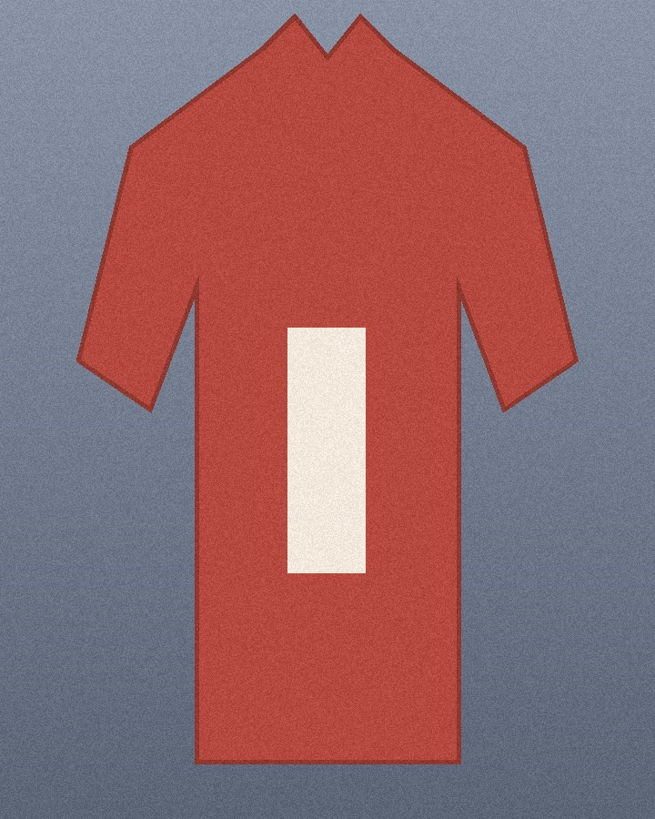
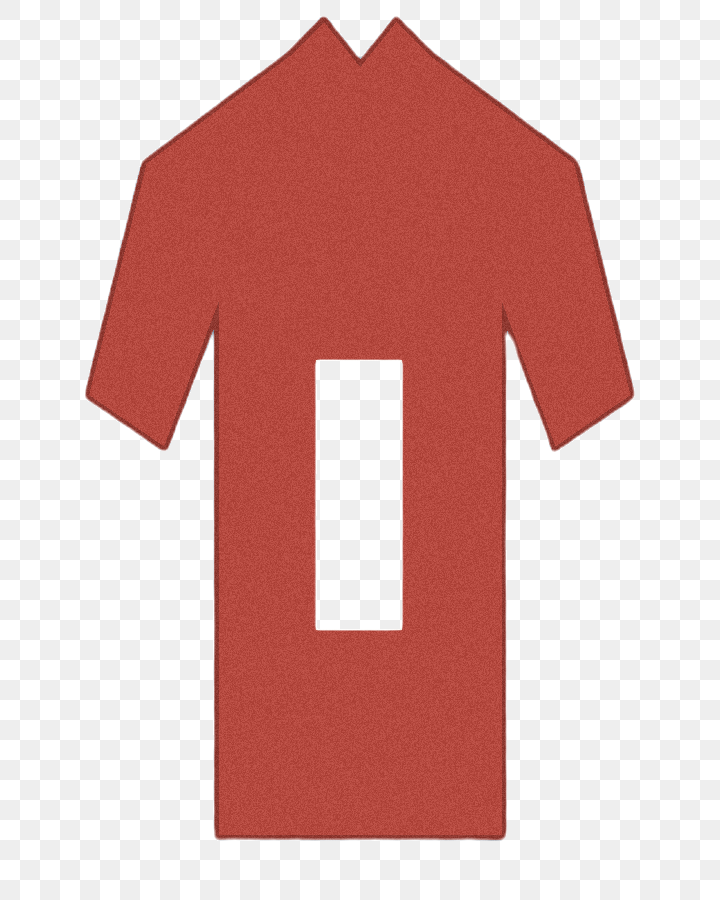
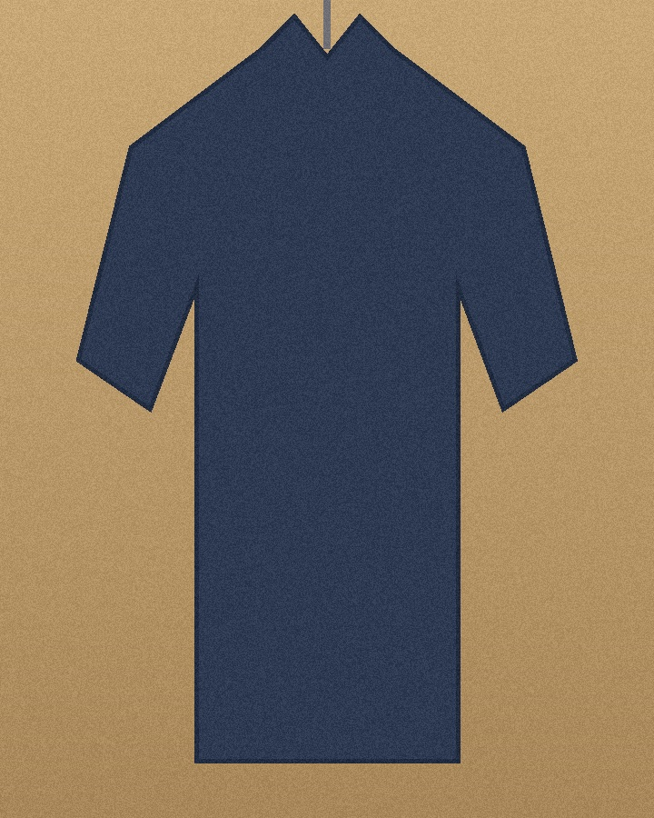
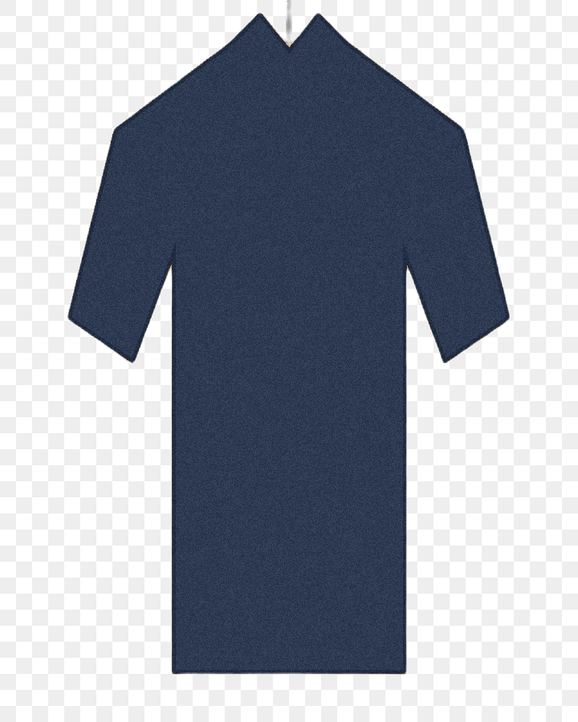
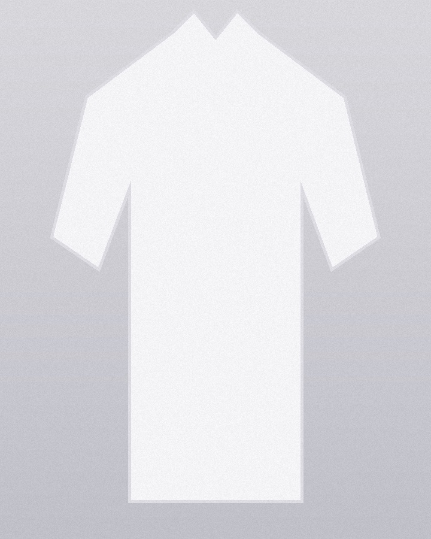
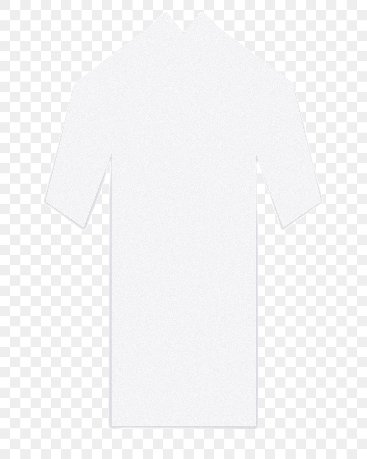
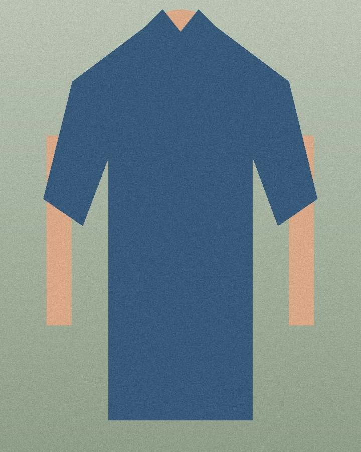
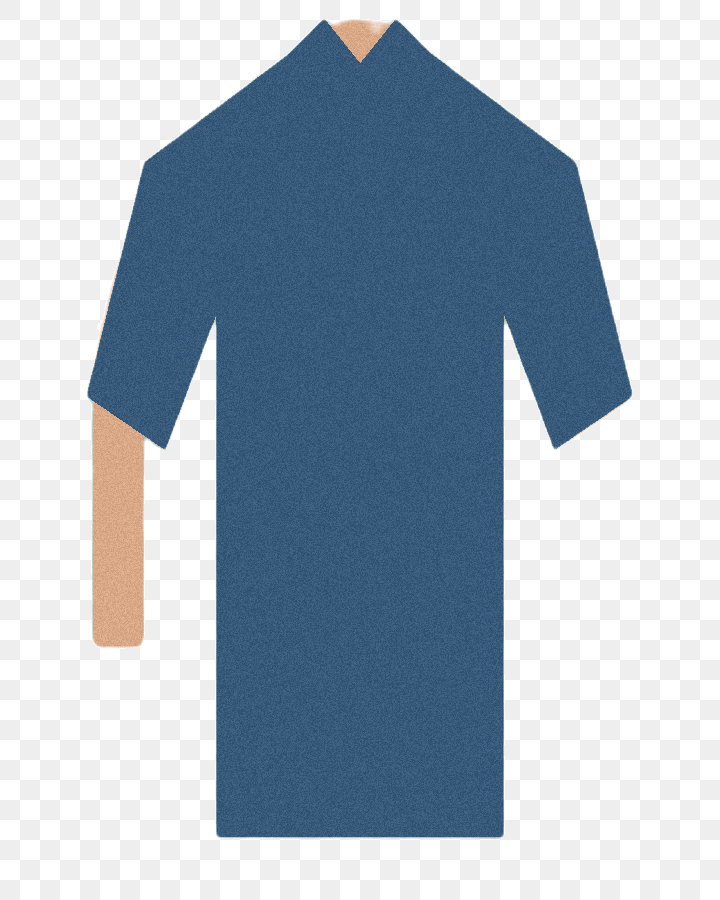

| 层 | 用例 | 验证点 | 耗时 |
|---|---|---|---|
| 纯函数 | bad size throws BadInput | 非法尺寸/长度抛 BadInput，不触模型 | 1 ms |
| 纯函数 | uniform red pixel normalizes | 1×1 纯色 → 320² 常量场，ImageNet mean/std 逐通道数值精确 | 7 ms |
| 纯函数 | input at model side resizes identity | 320×320 输入恒等缩放，无插值混色 | 5 ms |
| 纯函数 | constant mask stays opaque | 常量掩码保守输出全 255（宁可不抠不误透明，ADR-004） | 1 ms |
| 纯函数 | all zero mask stays opaque | 全零掩码（无显著主体）同样保守放行 | 0 ms |
| 纯函数 | horizontal gradient spans range | 渐变掩码单调映射且覆盖 [0,255] | 4 ms |
| 纯函数 | rgb channels untouched | 只写 alpha，RGB 原样保留 | 0 ms |
| 编排 | cutout without prepare auto-init | 未预热直接抠图可自动初始化（UI 无需管状态机） | 14 ms |
| 编排 | bad input throws w/o session | 非法输入不建会话、readiness 不受污染 | 2 ms |
| 编排 | failed init marks Failed and retries | 建会话失败 → Failed 态 → 重试恢复 Ready | 49 ms |
| 编排 | concurrent cutouts serialize | 3 路并发推理零重叠（maxInflight==1） | 46 ms |
| 编排 | idle timeout releases session | 空闲超时自动释放（虚拟时间），下次调用重建 | 14 ms |
| 编排 | release closes idempotently | 手动释放幂等，释放后可重建 | 14 ms |
| 真模型 | synthetic disk end to end | 白底深蓝圆盘 640²：主体 alpha=255 / 背景 alpha=0 / RGB 不动 | 229 ms |
| 真模型 | scene samples ×4（见第三节） | 四类场景质量断言 + 样张产物 | 2527 ms |








wardrobe/gradlew -p libs/cutout test（纯 JVM，无需模拟器；样张产物输出至 libs/cutout/build/cutout-samples/）。
模型 SHA-256 309c8469…f4ddd8（rembg 同款 u2netp）。设计依据：libs/cutout/specs/00-architecture.md · 迭代档案：wardrobe/specs/iterations/it-016-cutout-sdk.md